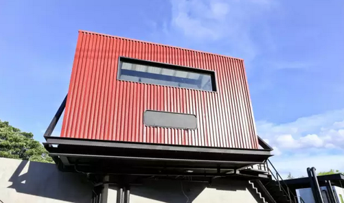
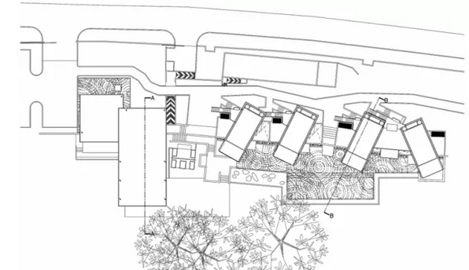

集装箱元素打造泰国奢华度假村
桂诺伊河（Kwai Noi River）位于泰国北碧府，是当地著名的名胜古迹，包括有泰国最大的野生动物保护区以及帕萨满欣历史遗迹公园等。今天要介绍的案例X2桂河度假村就是位于这个山清水秀的位置，既拥有壮观的山景，明净的蓝天，令人叹为观止的江景也拥有当地著名的庙宇，小村庄以及甘蔗种植园。

桂河度假村并不是利用真正的集装箱去建造，而是加入了集装箱的元素。该度假村的设计由其度假村的业主与建筑师共同合作完成，其灵感来自北碧府独特的历史（拥有历史价值的桥梁铁路等）与其优美的地理位置。

度假村的建筑采用“轻型结构”的概念，运用了木头，竹子以及波纹板等。尽管它并没有利用真正的海运集装箱去建造，但毋庸置疑的是，集装箱元素为建筑的整体建筑构成了一种独特的设计风格。
建筑师将部分建筑外观打造成集装箱的样式，给人一种时尚的工业化气息。除此之外，度假村还把许多废弃的工业材料改造成别致的工业装饰。将遗弃的钢管转化为户外灯饰配件和室内衣橱的衣架。一些未使用的机械和就电动机则改造成工业雕塑。
